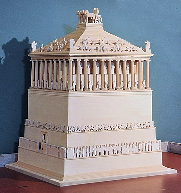

 The Mausoleum at Halicarnassus or Tomb of Mausolus was a tomb built between 353 and 350 BC in Halicarnassus (present Bodrum, Turkey) for Mausolus, a satrap in the Achaemenid Empire, and his sister-wife Artemisia II of Caria. The structure was designed by the Greek architects Satyros and Pythius of Priene. Its elevated tomb structure is derived from the tombs of neighbouring Lycia, a territory Mausolus had invaded and annexed circa 360 BC, such as the Nereid Monument.
The Mausoleum was approximately 45 m (148 ft) in height, and the four sides were adorned with sculptural reliefs, each created by one of four Greek sculptors: Leochares, Bryaxis, Scopas of Paros, and Timotheus. The finished structure of the mausoleum was considered to be such an aesthetic triumph that Antipater of Sidon identified it as one of his Seven Wonders of the Ancient World. It was destroyed by successive earthquakes from the 12th to the 15th century, the last surviving of the six destroyed wonders.